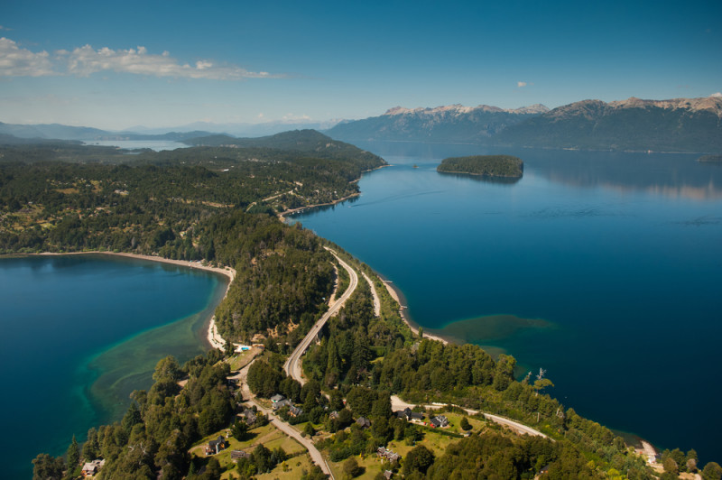
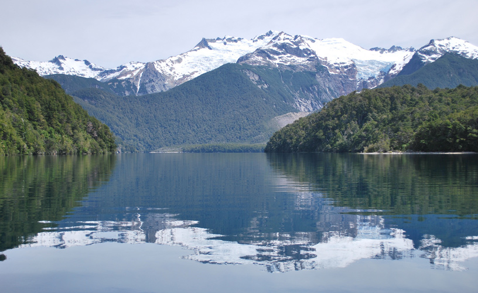
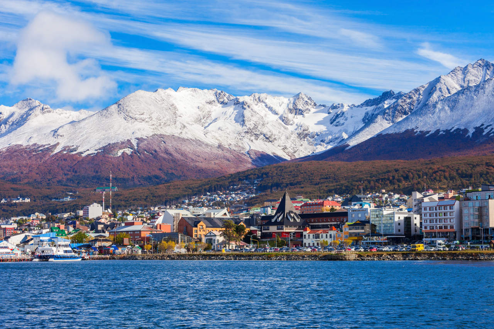

Glaciar Perito Moreno
El glaciar Perito Moreno es uno de los glaciares más grandes del mundo y una de las principales atracciones turísticas de la Patagonia argentina. Se encuentra en el Parque Nacional Los Glaciares, en la provincia de Santa Cruz. El glaciar es una maravilla natural que se puede ver desde diferentes puntos, ya sea desde la orilla del lago Argentino, en un crucero o en una caminata sobre el glaciar.

Ruta de los Siete Lagos
La Ruta de los Siete Lagos es una carretera que recorre la cordillera de los Andes, en la provincia de Neuquén. El camino une las localidades de Villa La Angostura y San Martín de los Andes, y ofrece unas vistas espectaculares de los lagos Nahuel Huapi, Correntoso, Espejo, Escondido, Villarino, Falkner y Machónico.
Parque Nacional Los Alerces
El Parque Nacional Los Alerces es un parque nacional ubicado en la provincia de Chubut. El parque es famoso por sus bosques de alerces, una especie de conífera que puede vivir hasta 3.000 años. El parque también cuenta con una gran variedad de otros paisajes, como montañas, lagos y ríos.
Ushuaia
Ushuaia es la ciudad más austral del mundo y la capital de la provincia de Tierra del Fuego. Ushuaia es un destino popular para los amantes de la naturaleza, ya que ofrece una gran variedad de actividades al aire libre, como senderismo, pesca, kayak y rafting. La ciudad también es un buen punto de partida para visitar el Parque Nacional Tierra del Fuego, que alberga una gran variedad de flora y fauna.
